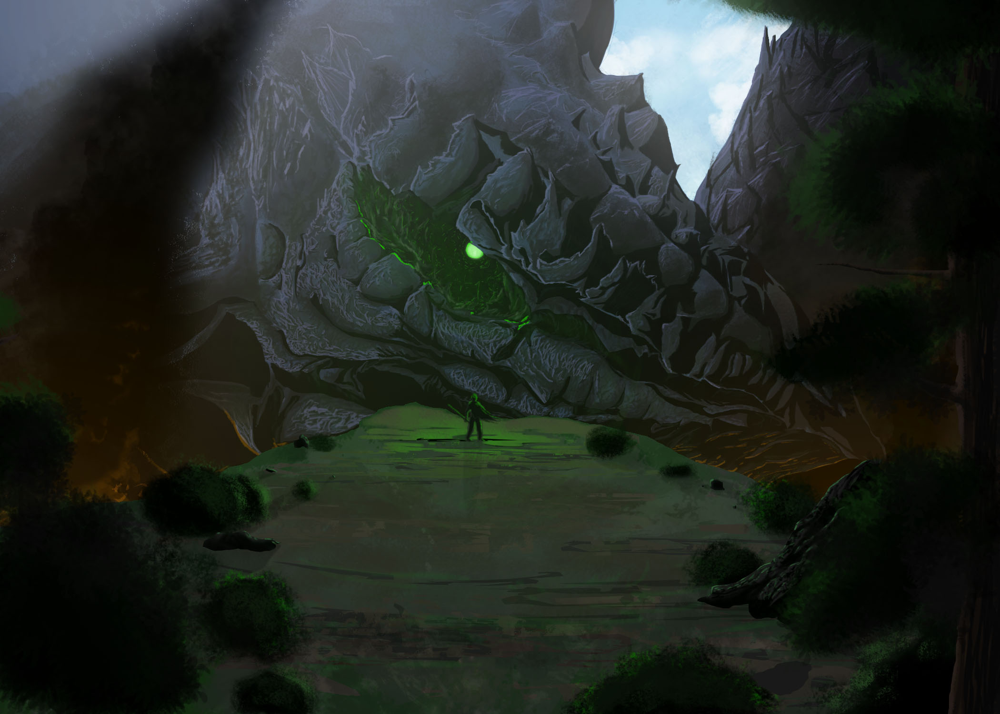

The Emerald Mountain, Widow of Moude

Class:
Caldrin
Size Rank:
Coloss Minor
Generation:
Second
Link:
Mystbound
Last Host:
Isopel of Moude
Having a remarkable resemblance to mountainous terrain, the caldrin Enera is adorned with massive protrusions and ridges along her back, hindlegs, crest, bridge, and snout. Though once winged, her history had caused a grave injury that burned the majority of her wingspan, leaving her without connective tissue with what remained as nonfunctional, stone-like limbs. Enera also bore radiant myst-green eyes, giving her the title of Emerald Mountain. She is one of the earliest documented mystbound within the age of man, living throughout the Separation, an extensive ancient period torn with constant infighting, and the battle against the fey. Though little is known about Enera's characteristics and behavior, extensive folklore has survived to describe her involvement within the struggles of the Separation, and remarkably, a memoir written by a postillion.
She tells me of their time together. Their talks come nightfall, sharing bits of one another. I do not know how it works, or if what she hears is real, but I have seen it. Only once, when [———] attacked. Never have I been [more] afraid. What I saw merited fear, but it was more what I uncovered: that my dear Isopel is safe. Sound. Smiling, while the plumes blow away.
Enera's last known host, a woman by the name of Isopel of Moude, fostered a hermetic relationship with the caldrin, binding the two closely in an extremely heretical pact due to many having deep contempt against all inhuman creatures as a result from the warring fey. It was an action that put her life in danger, immediately shunning her and sparking a tribe-wide search and hunt. Unable to preserve any relationship to her home settlement in Moude, Isopel chose to exile herself and wander the valleys of Moudellin, defending various settlements from fey assaults alongside Enera, and was thereafter nicknamed the half-caste witch. Only one exonerated on her behalf, a postillion she loved by the name of Gilow. After her departure, Gilow recites a particularly difficult period of living, one that increasingly worsened with public humiliation, vandalism towards his hovel, and eventually torture, though Gilow would endure and uphold his view of Isopel despite this.
One spring, the clans of Moudellin would be nearly destroyed by a fey-led pack of cusith, and Moude would incur grievous loss. Their children stolen, livestock nearly wiped, and capable numbers thinned, notable members of the clan speculated it was the result of the beast the witch bore, and learned of their additional member’s connection to her. Gilow was kept alive only by the fear that the beast, Enera, would return to avenge him—or worse, that it would invite an ill-curse upon the whole settlement, something the fey eagerly partake in and spread.
In a later journal entry, Gilow would be tied, blindfolded, and beaten on the legs and abducted far from Moude, but would eventually free himself after one day of struggle. Lost, unable to walk due to a broken leg, and disoriented from starvation and exhaustion, he strikes luck on the second day when he is awoken by the half-caste witch, frantic and stricken with panic. They share a conversation, their last, and he learns that her decision of self-exilation was made as a preventative measure to protect him from the scrutiny of his involvement with her. As she would come to find, this did not alleviate nor mitigate the maltreatment her lover would incur. She weeped, now in full view of the state he was in, though Gilow felt she was not to blame. Nevertheless, she put blame on herself, attending to her lover enough so he may at least hobble to somewhere safe. After a painful farewell, and despite his wishes, she was never seen again as Isopel.
For years to come, the Emerald Mountain fought against humankind—known as the Witch’s Reign, appearing across Moudellin to massacre its people and destroy settlements, simultaneously starting wars and ending existing ones, ostensibly aiding the fey but also fighting them just as fiercely. Rare survivors recount the witch’s wrath, telling of her brief visage and tears when she was human once more, before steering towards what next battle laid before her. The clearest remnants about the Reign are left in a series of letters from Gilow, who—because of his injuries—was not able to reach Isopel or Enera in their one-sided war. He would continue to follow in their wake for the rest of his life, spreading word of his truth about mystbinding and all future half-castes.
"The bestias we so feared—we so revered for so long since the birth of our days would not stop. They couldn’t stop. For all the ones that passed onto the afterlife, for all the ones that saw each of the Creator’s makings, I curse it all. It could’ve been stopped… all of it. And she could’ve been the one to do it. For those days that we had went through hell and back, the very days that we had almost been wiped numerous times… all of it was in vain.
And what was I supposed to do? I did all that I could. They didn’t listen, and now they will pay the price. But I’m no better, am I? For I didn’t believe her either. She tried her best… but it was all for naught. In the end, she was the strongest [———]. What side am I truly on? Do I fight for my own kind? Am I left with nothing but the things I [———]? I’ve lost myself too far into regret… but this, I know, is my punishment.
If you are reading this, do not concern yourself. Only divinity [———] already too late. I write to see my own place… nothing more. I curse us all to regret what we’ve done. For now, I set off to find her. I fear that our kind will never see the light of day. But in the end, I suppose we were all meant to cower in the shadows. This was our kind’s destiny."
—Gilow of Moude